BOSCH EOBD injection system
- Path
- Descriptions > 10 ENGINE > 1056 PETROL FUEL INJECTION SYSTEM > BOSCH EOBD injection system
- Kind
- system description
- Applies to
- engines: 3.0 V6, 3.2 V6; all production periods
- Interactive page
- https://sloeber94.github.io/elrnDB-lThss/en/#/612216
Applies to: engines: 3.0 V6, 3.2 V6; all production periods
SPECIFICATIONS
Function
The Bosch Motronic belongs the category of systems integrated with:
- ignition.
- phased sequential electronic injection.
The Engine Control Node controls:
- air flow at the idling speed set by the electronic throttle;
- ignition time, with the benefit of maintaining smooth engine operation even when environmental and applied load parameters change.
The Engine Control Node controls and manages injection so that stoichiometric air/fuel ratio is always within optimum limits.
Main system functions are essentially as follows:
- self-learning;
- system self-adaptation;
- self-diagnosis;
- Lancia CODE recognition;
- cold starting check control;
- Combustion - Lambda sensor control;
- knock control;
- control of enrichment during acceleration;
- Fuel cut-off during over-run;
- fuel vapour recovery;
- control of maximum rpm;
- fuel pump control;
- Connection with climate control system;
- cylinder position recognition;
- control of optimum injection time for each cylinder;
- Ignition advance adjustment;
- idle speed management (also dependent on battery voltage);
- throttle opening law management (Sport throttle reponse);
- control of engine cooling fan;
- control of Cruise control system;
- connection to ABS control unit;
- connection with automatic transmission control unit;
- connection with control panel.
- fuel system diagnostics;
- catalytic converter diagnostics;
- misfire detection;
- lambda sensor diagnostics.
VIEW OF ASSEMBLY
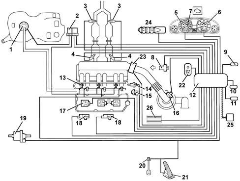
- 1, Fuel pump.
- 2, Relays.
- 3, Lambda sensors downstream of the catalyzer.
- 4, Lambda sensors upstream of the pre-catalyzer.
- 5, Rev counter.
- 6, Speedometer.
- 7, Injection warning light.
- 8, Timing sensor.
- 9, Climate control system connector.
- 10, Tester connector.
- 11, Lancia CODE connector.
- 12, Engine Control Node.
- 13, Injectors.
- 14, Coolant temperature sensor.
- 15, RPM sensor.
- 16, Air flow meter with air temperature sensor.
- 17, Ignition coils.
- 18, Detonation sensors.
- 19, Fuel vapour recirculation solenoid.
- 20, Brake pedal switch.
- 21, Accelerator pedal potetiometer
- 22, Sport throttle response.
- 23, Throttle body built into DVE
- 24, Cruise control.
- 25, CAN line.
- 26, Engine coolant temperature control unit.
DIAGRAM SHOWING INFORMATION ENTERING/LEAVING ENGINE CONTROL NODE.
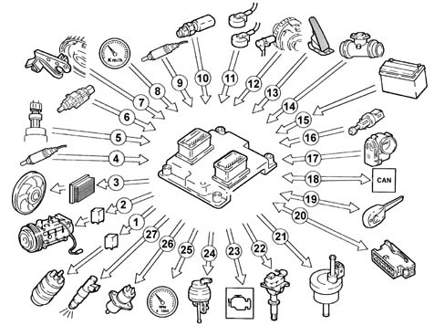
- 1, Fuel pump.
- 2, Air conditioner compressor.
- 3, Electric fan.
- 4, Lambda sensors upstream of the pre-catalyzers.
- 5, Cruise control.
- 6, Quadrinary.
- 7, Brake - clutch pedal switch.
- 8, Timing sensor.
- 9, Speedometer.
- 10, Lambda sensors downstream of the catalyzers.
- 11, Coolant temperature sensor.
- 12 - Knock sensors.
- 13, RPM sensor.
- 14, Accelerator pedal potetiometer.
- 15, Air flow meter with air temperature sensor.
- 16, Battery.
- 17, Throttle body built into DVL
- 18, CAN line (for communication With ABS/ASR and automatic transmission control units).
- 19, Lancia CODE.
- 20, Diagnostic tester input
- 21, Fuel vapour recirculation solenoid.
- 22, Ignition coils.
- 23, Injection warning light.
- 24, Rev counter.
- 25, Injectors.
OPERATION
Operating strategies
Injection system
The essential conditions to be met by the air-fuel mixture for efficient operation of engines with controlled ignition systems are mainly as follows:
- the metering (air/fuel ratio) must be kept as close as possible to stoichiometric levels to assure maximum catalytic converter conversion capacity (max. efficiency).
- homogeneity of the mixture, consisting of petrol distributed throughout the air as finely and uniformly as possible.
Information that the Engine Control Node processes to control optimum metering is received by electrical signals emitted by:
- air flow meter (debimeter) and air temperature sensor, for the exact quantity of air taken in.
- rpm sensor that generates an alternating single-phase signal whose frequency is an indicator of engine rpm. The Engine Control Node uses this signal to detect MISFIRE.
- throttle potentiometer, to detect the required acceleration conditions.
- coolant temperature sensor on the thermostat.
- lambda sensors to measure exhaust gas oxygen content.
Two lambda sensors are located on the exhaust system (one per block) at the preconverter input. Two further lambda sensors are also fitted downstream of the converters to determine converter efficiency and correct injection times for both blocks in time to ensure maximum cat conversion efficiency at all times.
Ignition system
The ignition system is static, inductive discharge type (i.e. without a HT distributor) with power modules located inside the Engine Control Node.
The ignition system is arranged so that each coil supplies the spark plugs of the associated cylinder.
The advantages of this solution are:
- lower electrical overload;
- guaranteed constant discharge on each spark plug.
The Engine Control Node contains a memory map with a set of optimum ignition advance values (for the cylinder in combustion phase) that the engine can adopt according to the required speed and engine load.
The Engine Control Node corrects the advance value mainly on the basis of:
- engine coolant temperature:
- intake air temperature.
- knock.
Information that the Engine Control Node processes to control the coils is received by electrical signals emitted by:
- air flow meter (debimeter) and air temperature sensor, for the exact quantity of air taken in.
- rpm sensor that generates an alternating single-phase signal whose frequency is an indicator of engine rpm.
- knock sensor (on the upper part of the crankcase between the two heads) to recognise the cylinder with knock and thus correct the ignition advance.
- throtle position potentiometer to recognise minimum, partial and full-gas load conditions.
- timing sensor.
The Engine Control Node uses the rpm signal to recognise misfiring that could damage the catalytic converters.
Self-learning
The Engine Control Node runs its initialisation program under the following conditions:
Engine Control Node removal/refitting or replacement.
removal-refitting or replacement of the throttle body built into the DVE.
removal-refitting or replacement of the rpm sensor/phonic wheel for detection of misfiring.
The values stored by the Engine Control Node are maintained when the battery is disconnected.
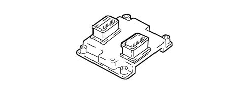
System self-adjustment
The Engine Control Node is equipped with a self-adjustment function that is designed to recognize the changes that take place in the engine due to the processes of bedding in and ageing of both the components and the engine itself in time.
These changes are memorized in the form of modifications to the basic map and are designed to adapt the operation of the system to the gradual alterations in the engine and the components compared with when they were new.
This self-adjustment function also makes it possible to compensate for the inevitable differences in any replacement components (due to production tolerances).
The Engine Control Node modifies the basic map in relation to engine specifications when new on the basis of an exhaust gas analysis.
The self-adjustment parameters are not deleted if the battery is disconnected.
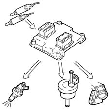
Self-diagnosis
The control unit self-diagnostic system checks that the system is working properly and indicates any irregularities by means of an MIL warning light in the instrument panel with a standardized ideogram and colour laid down by European regulations. This warning light indicates engine management faults and also faults detected by EOBD diagnostic strategies.
The MIL warning light operating (mil) strategy is as follows:
- with the ignition on, the warning light comes on and remains on until the engine has been started up. The control unit self-diagnostic system checks the signals coming from the sensors comparing them with the permitted limits.
Fault indication during start up:
- failure of the warning light to go out when the engine has been started indicates that there is an error memorized in the control unit.
Fault indication during operation:
- the warning light comes on in flashing mode to indicate possible catalytic converter damage due to misfiring.
- the warning light comes on in constant mode to indicate the presence of engine management or EOBD diagnostic errors.
RECOVERY
From time to time the Engine Control Node defines the type of recovery according to the components that are faulty. The recovery parameters are managed by components that are not faulty.
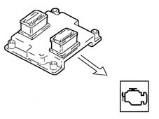
Lancia CODE recognition
When the Body Computer receives an ignition ON signal, it communicates wtih the Engine Control Node to allow start-up. For vehicles with Passive Entry, see [DF55].
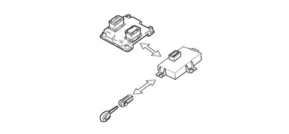
Cold starting check
Under cold starting conditions, the mixture naturally becomes leaner and this gives rise to low fuel evaporation at low temperatures:
- fuel condensation on inner walls of the intake manifold.
- higher lubrication oil viscosity.
The Engine Control Node detects this condition and corrects injection time on the basis of:
- coolant temperature.
- intake air temperature.
- battery voltage.
- engine rpm.
The ignition advance is determined solely on the basis of rpm and coolant temperature.
During the start-up stage, the Engine Control Node sends an initial simultaneous injection command to all injectors (full-group injection). Once cylinder phase has been detected, normal phased sequential operation can begin.
While the engine is warming up, the Engine Control Node controls the throttle body built into the DVL to modulate the amount of air required to ensure engine revs are high enough to keep the engine running.
RPM is made to decrease with increasing temperature until the rated level is reached with the engine warm.
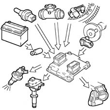
Combustion - Lambda sensor check
In EOBD systems, the lambda sensors are all the same type and located upstream of the catalytic conversion system and downstream of the converter. The upstream sensors determine concentration control known as the 1st loop (upstream sensor closed loop). The sensors downstream of the catalytic converter are used to for converter diagnostics and to fine-tune 1st loop control parameters. The second loop is therefore adaptive to make up for production discrepancies and slight drift that upstream sensor responses could experience due to ageing and contamination. This control is known as 2nd loop control (downstream sensor closed loop).
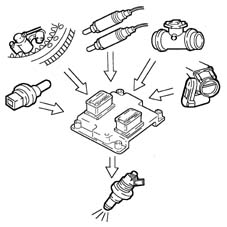
Knock control
The Engine Control Node may delay ignition selectively for a particular cylinder on the basis of a combination of parameters received from knock and timing sensors and:
- reduce ignition advance in 3° steps to a maximum of 9°.
- update the threshold to take into account underlying noise levels and engine ageing.
During acceleration, the Engine Control Node uses a higher threshold due to the higher engine noise.
When the knock disappears, the Engine Control Node increases ignition advance in 0.75° steps until recovery is complete.
The Engine Management Node self-adaptive function:
- stores advance reductions that are repeated continuously.
- adjusts mapping to the various different engine service conditions.
Recovery:
- if the timing sensor or knock sensor or Engine Control Node should fail, a variable ignition delay is implemented on the basis of rpm and engine temperature. Maximum ignition delay is always less than 9° engine.
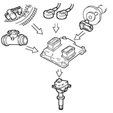
Check on enrichment during acceleration.
In cases of high acceleration demand, the Engine Control Node modifies injection time and throttle position.
Recovery:
- The Engine Control Node replaces the signal from the faulty air flow meter with a signal from the potentiometer built into the throttle body integral with the DVL.
Fuel cut off during over-run (cut-off)
The Engine Control Node under the following circumstances:
- detection of idling status.
- rpm above a certain threshold.
deactivates fuel injection on the basis of:
- rpm.
- engine temperature.
- Vehicle speed.
Before reaching idling level, the rpm descent rate is assessed.
If this exceeds a certain level, fuel injection is partially re-activated to ensure that engine rpm drops smoothly to idling level.
Once idling speed has been achieved, normal functions are resumed.
Fuel cut-off is active only 20 seconds after engine start-up.
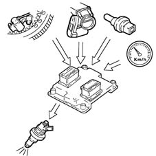
Fuel vapour recovery.
Fuel vapours (pollutants) collected in the activated carbon filter (canister) are directed to the intake ports to be burnt.
This is mediated by a solenoid controlled by the Engine Control Node that holds the solenoid closed for 60 seconds after start-up and then opens it for 90 seconds.
During this time period (90 seconds), the lambda sensor monitors combustion and the Engine Control Node compares levels with the basic map.
If no changes are detected, the Engine Control Node closes the solenoid. Otherwise it keeps it open for a further 90 seconds to flush the canister.
Filter flushing flow is limited to a small percentage of the air flow read by the debimeter to ensure driveability and engine emission settings are affected as little as possible.
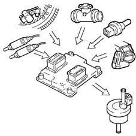
Maximum rpm check.
According to the rpm level reached by the engine, the Engine Control Node:
- above 6800 rpm, cuts off the fuel supply to the injectors (rpm can rise to a peak of 7000 rpm for a period no longer than 5 secs.).
- below 6600 rpm, injector control is resumed.
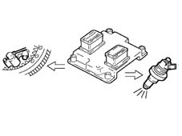
Fuel pump control
Engine Management Node:
- supplies the fuel pump.
- key ON (for 5 secs).
- key on START-UP and revs %lt; 25 rpm.
- cuts off fuel supply to pump.
- key in OFF position.
- with revs %lt; 25 rpm.
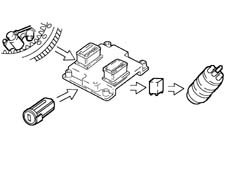
Connection with climate control system.
The compressor takes up power from the engine when the climate control system is activated.
When idling, the Engine Control Node adjusts air flow to the new power requirement. This offers the benefit of maintaining optimum driveability.
The Engine Control Node manages compressor cut-out.
- over 6500 rpm.
- above a set engine coolant temperature threshold (117°C);
- upon start-up.
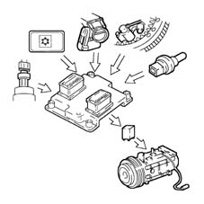
Recognition of cylinder position
During each engine revolution, the Engine Control Node detects the cylinder in combustion phase:
- controls the injection and ignition sequence for the appropriate cylinder.
When the timing sensor is faulty, the Engine Control Node cannot detect whether cylinder no. 1 or cylinder no. 5 is in combustion phase and implements the following strategies:
- with the engine running, it ensures the engine runs correctly due to its memorised cylinder sequence.
- if the engine is turned off and restarted, the ignition is activated for coil pairs with a lost spark. Knock control is deactivated and a fixed delay is applied for all cylinders.
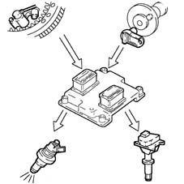
Check on optimum injection time for each cylinder
The Engine Control Node computes the optimum injection time for each cylinder on the basis of special maps:
- it modifies the injection opening start point.
- it maintains the closure point determined by the mapping, selected on the basis of rpm.
- fuel injection is sequential and phased for each cylinder (SEFI).
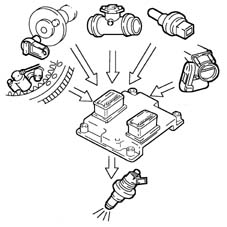
Ignition advance adjustment.
The Engine Control Node processes signals from the sensors and determines:
- injection advance for each cylinder
- ignition delay for the relevant cylinder (affected by knock).
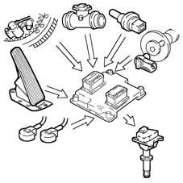
Idle speed check.
The Engine Control Node detects idling status when the accelerator pedal is released.
The Engine Control Node controls idle speed on the basis of appliances activated and brake-clutch pedal signals and governs motorised throttle postion.
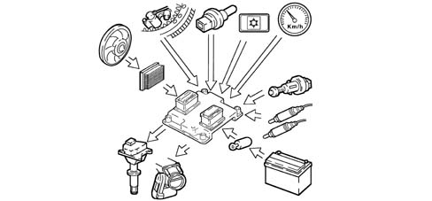
Fan control
The Engine Control Node controls fan activation on the basis of coolant temperature:
- 1st speed activation temperature 95°C.
- 2nd speed activation temperature 102°C.
If the air conditioning system is turned on, the Engine Control Node controls fan 1st speed activation.
When no coolant temperature signal is present, the Engine Control Node implements the recovery function by activating the fan at the 2nd speed until the error is removed.
When the fan is deactivated, the throttle opening is increased to prevent engine rpm from falling.
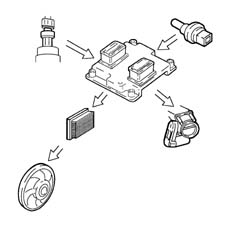
Cruise control system check (where fitted).
The Engine Control Node governs the motorised throttle directly according to cruise control lever position to modulate and maintain a stored vehicle speed.
A warning light on the dashboard activated by the Engine Control Node indicates system operation or deactivation status.
Cruise control is temporarily disabled:
- by operating the brake,
- by operating the clutch;
the recall button returns to the stored speed.
Cruise control is not disabled when the accelerator is pressed (e.g. to overtake) and automatically restores the vehicle to the set speed as soon as the accelerator is released.
The ASR function (antispin) takes precedence over cruise control for safety reasons.
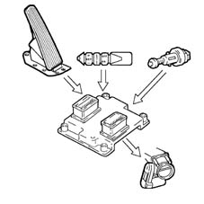
Connection with ABS/ASR control unit (where fitted).
Communication between the Engine Control Node and the ABS/ASR control unit is via the CAN line available on both control units.
If the wheels slip (indicated by the ABS/ASR control unit), the Engine Control Node reduces drive torque by:
- reducing ignition advance.
- reducing throttle opening angle.
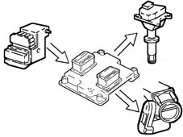
Connection with automatic transmission control unit (where fitted).
Communication between the Engine Control Node and the CAE control unit is via the CAN line available on both control units.
If the wheels slip (indicated by the CAE control unit), the Engine Control Node reduces drive torque by:
- reducing ignition advance.
- reducing throttle opening angle.
Recovery: when the CAN line is faulty, the Engine Control Node identifies speed selector position (D-P-N) by means of a signal from a switch on the selector. If the lever is in D position, the Engine Control Node reduces torque.
The CAE control unit implements its own specific recovery strategy.
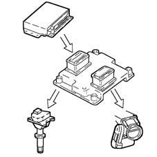
DESCRIPTION OF COMPONENTS
Engine Management Node
Specifications
The Engine Control Node is fitted in the engine bay on the intake chamber.
The Engine Control Node memory is flash eprom type, i.e. it can be overwritten externally without having to adjust the hardware.
Replacement of the Engine Control Node or integrated throttle body requires the initialisation procedure to be run.
Pin out
The Engine Control Node pin-out for connector A is as follows:
- A1, Cruise Control warning light.
- A2, Fuel vapour solenoid control.
- A3, Lancia CODE connection.
- A4, Not connected.
- A5, Speed selector (solo a.t.).
- A6, Compressor activation request.
- A7, Accelerator pedal potentiometer supply.
- A8, Potentiometer signal - 1 accelerator pedal.
- A9, Quadrinary - fan 1st speed request.
- A10, Cruise Control ON/OFF.
- A11, Automatic transmission version coding.
- A12, Linea CAN-L.
- A13, Compressor relay control.
- A14, Not connected.
- A15, Direct power supply.
- A16, Ignition-operated power supply, via main relay.
- A17, Not connected.
- A18, Cruise Control warning light.
- A19, Excess coolant temperature warning light.
- A20, Provision for "Flash programming".
- A21, Not connected.
- A22, Fuel level sensor.
- A23, Not connected.
- A24, Potentiometer earth - 1 accelerator pedal.
- A25, Potentiometer earth -2 accelerator pedal.
- A26, Brake light switch
- A27, Brake light switch.
- A28, SPORT function switch.
- A29, CAN-H line.
- A30, Fuel pump relay control.
- A31, Main relay activation.
- A32, Ignition-operated power supply, via main relay.
- A33, Not connected.
- A34, SPORT function warning light.
- A35, Rev counter signal.
- A36, Not connected.
- A37, Not connected.
- A38, Signal from air conditioner.
- A39, Not connected.
- A40, Potentiometer signal -2 accelerator pedal.
- A41, Quadrinary - fan 2nd speed request.
- A42, Cruise Control Resume.
- A43, Cruise Control SET +.
- A44, Speedometer sensor signal.
- A45, CAN-H line
- A46, Injection warning light.
- A47, Ignition-operated power supply.
- A48, Ignition-operated power supply, via main relay.
- A49, Not connected.
- A50, 1st speed fan control.
- A51, Not connected.
- A52, Fuel consumption signal.
- A53, Diagnostics connector (K line).
- A54, Air temperature sensor signal.
- A55, Not connected
- A56, Power supply for accelerator pedal potentiometer.
- A57, Air flow meter signal.
- A58, Cruise Control SET -.
- A59, Clutch pedal switch.
- A60, Oil pressure switch.
- A61, CAN-L line.
- A62, Fan 2nd speed control.
- A63, Power supply for debimeter.
- A64, Not connected.
The Engine Control Node pin-out for connector B is as follows:
- B1, Throttle body motor earth.
- B2, Lambda sensor heating (pre-cat. 2) (front block).
- B3, Cylinder injector control 2.
- B4, Not connected.
- B5, Not connected.
- B6, Reference earth for knock sensor 2.
- B7, Lambda sensor earth (pre-cat 2).
- B8, Not connected.
- B9, Not connected.
- B10, Engine rpm sensor.
- B11, Not connected.
- B12, Lambda sensor heating (post-cat. 2).
- B13, Not connected.
- B14, Cylinder 3 coil control.
- B15, Cylinder 2 coil control.
- B16, Cylinder 1 coil control.
- B17, Throttle body motor power supply.
- B18, Lambda sensor heating (post-cat. 2).
- B19, Cylinder injector control 1.
- B20, Cylinder injector control 3.
- B21, Not connected.
- B22, Knock sensor 1.
- B23, Lambda sensor signal (pre-cat. 1) (rear block).
- B24, Potenziometer 1 throttle body.
- B25, Engine coolant temperature.
- B26, Sensor reference earth.
- B27, Not connected.
- B28, Lambda sensor signal (post-cat. 1).
- B29, Not connected.
- B30, Cylinder 6 coil control.
- B31, Cylinder 5 coil control.
- B32, Cylinder 4 coil control.
- B33, Throttle body motor earth.
- B34, Lambda sensor heating (pre-cat. 1).
- B35, Cylinder injector control 4.
- B36, Cylinder injector control 6.
- B37, EGR solenoid control (provision).
- B38, Knock sensor 2.
- B39, Lambda sensor signal (pre-cat. 2) (front block).
- B40, Potenziometer 2 throttle body.
- B41, Not connected.
- B42, Timing sensor signal.
- B43, Not connected.
- B44, Lambda sensor signal (post-cat. 2).
- B45, Not connected.
- B46, Not connected.
- B47, Not connected.
- B48, Not connected.
- B49, Throttle body motor power supply.
- B50, Lambda sensor heating (post-cat. 1).
- B51, Timing reference earth.
- B52, Cylinder injector control 5.
- B53, Not connected.
- B54, Reference earth for knock sensor 1.
- B55, Lambda sensor earth (pre-cat. 1).
- B56, Not connected.
- B57, Not connected.
- B58, Throttle body motor potentiometer power supply.
- B59, Engine rpm sensor.
- B60, Lambda sensor heating (post-cat. 1).
- B61, Not connected
- B62, Not connected.
- B63, Not connected.
- B64, Not connected.
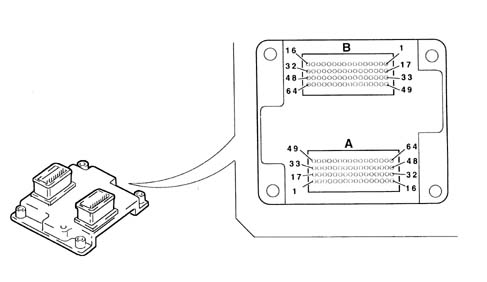
Injectors
Specifications
The single-jet injectors are installed on the distribution manifold and held by the manifold into their seats on the intake ducts.
A safety detent secures the injectors to the manifold and two o-rings assures a seal.
The injectors are responsible for delivering the required amount of fue to the engine.
They are "all or nothing" devices because they can exist in only two stable states, i.e. open or closed. They allow fuel through when open and prevent it from passing when they are closed.
They essentially consist of a nozzle controlled by an electromagnet and a return spring (4).
In rest position, pin (2) integral with core (3) is pressed by the spring against the end of injector nose (6) to close the hole and ensure a seal to prevent fuel emergence when not required.
As soon as coil (5) is excited, the core is attracted and compresses the spring by opening the nozzle hole and allowing fuel to emerge.
Assuming the physical properties of fuel (viscosity (*), density) and the pressure increase (via the pressure regulator) to be constant, the amount of fuel injected depends solely on injector opening time.
Winding excitation time is normally indicated as "excitation time".
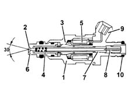
- 1. Injector body.
- 2. Pintle.
- 3. Magnetic core.
- 4. Coil spring.
- 5. Winding.
- 6. Injector nose.
- 7. Adjustable thrust spring.
- 8. Filter.
- 9. Electrical connection.
- 10. Sealing ring.
Engine coolant temperature sensor
Specifications
This is fitted on the thermostatic cup and measures coolant temperature by means of a dual NTC thermistor with negative resistance coefficient.
An NTC thermistor sends a signal to the Engine Control Node while the node sends a signal to the control panel gauge and warning light.
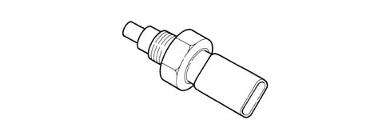
The sensor is designed using semiconductor technology. In other words, the resistance level drops if sensor element temperature increases with increasing coolant temperature.
Because the resistance does not change in linear fashion as temperature increases, it is relatively higher at low temperatures than at high temperatures.
Detonation sensors
Specifications
The piezoresistive knock sensors are fitted on the crankcase between the two heads. They measure the intensity of vibrations caused by knock in the combustion chambers.
The piezoresistant crystal in the sensor detects vibrations generated at frequencies between 12 and 16 Hz and converts them to electrical signals that are sent to the Engine Control Node.
The knock sensor bolt tightening torque is 1.95 -2.05 daNm.
Operation
The molecules of a quartz crystal are electrically polarised.
In rest condition (A), the molecules do not display any particular orientation.
When the crystal is subject to pressure or impact (B), their degree of alignmnent is directly proportional to the pressure acting on the crystal. This orientation generates a voltage at the crystal terminals.
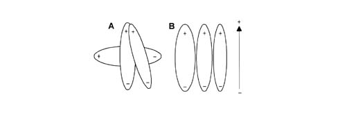
- A, Rest position
- B, Position under pressure.
Rpm sensor
Specifications
This is fitted on the crankcase and faces the phonic wheel on the flywheel.
The sensor is inductive type, i.e. it uses changes in the magnetic field generated by the phonic wheel teeth (60-2 teeth) passing in front of the sensor element.
The Engine Control Node uses the rpm sensor signal to:
- determine speed of rotation.
- determine crankshaft angular position.
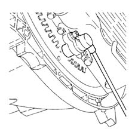
Operation
The changeover from full to empty determined by the presence or absence of a tooth brings about a magnetic flux change sufficient to generate an induced alternating voltage proportional to the number of teeth on a ring (or phonic wheel).
The frequency and amplitude of the voltage send to the Engine Control Node provides the node with an indication of engine angular speed.
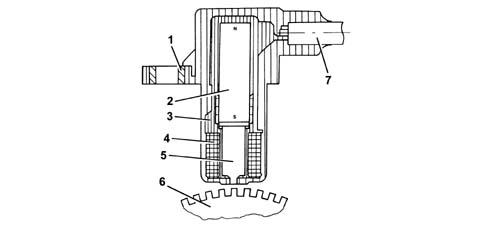
- 1 - Brass bush.
- 2 - Permanent magnet.
- 3 - Plastic sensor casing.
- 4 - Winding or coil.
- 5 - Polar core.
- 6 - Ring gear or flywheel.
- 7 - Coaxial paired cable or electrical connection.
The recommended distance (gap) between the end of the sensor and the flywheel for obtaining correct signals should be 0.8 ¸ 1.5 mm.
This distance is not adjustable. If the gap is found to be outside the tolerance limits, check the condition of the sensor and phonic wheel.
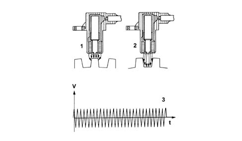
- 1 - Maximum magnetic flux.
- 2 - Minimum magnetic flux.
- 3 - Induced alternating voltage plot.
Timing sensor.
Specifications
This Hall effect sensor is fitted to the right cylinder head and faces a disc on the rear end of the camshaft - head discharge.
A pin on the disc allows the sensor to indicate the engine timing position.
The Engine Control Node uses the timing sensor signal to identify T.D.C. at the end of compression.
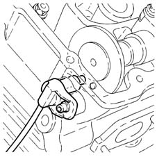
Operation
A current-carrying semiconductor layer immersed in a normal magnetic field (force lines at right angles to current direction) generates a potential difference known as a Hall voltage at its terminals.
During rotation of disc (1), when pin (3) passes over sensor (2), it blocks the magnetic field to generate a low output current.
Conversely, when sensor (2) reads after pin (3), the signal becomes high.
As a result, the high signal alternates with the low signal once every two engine revolutions, i.e. when cylinder no. 1 is 58° before T.D.C.
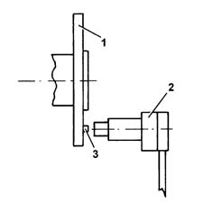
- 1. Camshaft disc.
- 2. Timing sensor.
- 3. Pin.
D.V.E.integrated throttle casing
Specifications
This is fitted on the intake chamber and regulates the amount of air taken in by the engine.
According to the signal received from the accelerator pedal potentiometer, the Engine Control Node controls throttle opening by means of a direct current motor built into the DVE integrated throttle body.
Throttle opening takes place from 0° to 80°, i.e. including idle speed adjustment range.
The DVE integrated throttle body is equipped with two built-in potentiometers, each of which controls the other.
If both potentiometers should fail or in the case of a power cut, the Engine Control Node reduces drive torque on the basis of accelerator pedal position.
- with the pedal fully depressed, it cuts off fuel to one or more pistons until a maximum speed of 2500 rpm is reached;
- with the pedal in intermediate positions, it cuts off fuel to one or more pistons until speed less than 2500 rpm is reached.
Replacement of the DVE integrated throttle body requires the initialisation procedure to be run.
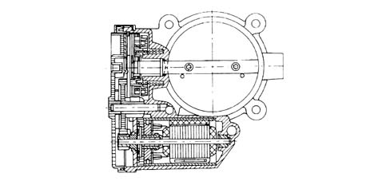
Air flow meter with built in air temperature sensor
Specifications
The debimeter is located on the air intake sleeve and is hot film type.
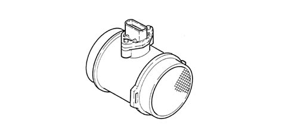
The debimeter contains an integral intake air temperature sensor.
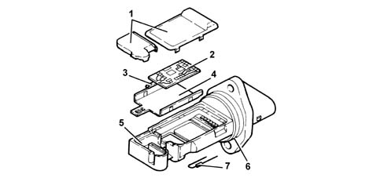
- 1 - Covers.
- 2 - Electronic card.
- 3 - Sensor.
- 4 - Mounting plate.
- 5 - Mount.
- 6 - O - Ring seal
- 7 - Temperature sensor.
Operation
The principle of operation is based on a heated membrane positioned within a measurement channel that carries air into the engine.
The hot film membrane is maintained at constant temperature (about 120°C higher than the incoming air temperature) by the heating coil.
The air mass that flows through the measurement channel tends to remove heat from the membrane. Current must therefore flow through the coil to maintain the membrane at a constant temperature.
This current is measured with a suitable Wheatstone bridge.
The current is thus proportional to the air flow mass.
The debimeter measures air mass (not volume) directly and thus eliminates problems of temperature, altitude, pressure etc.
Specifications
Rated flow (with voltage 4.56 V): 640 kg/h
Rated resistance at 25ºC: 2.0 kOhm ± 5%
Accelerator pedal potentiometer
Specifications
The accelerator pedal consists of two integral potentiometers, a main one and a safety one.
The Engine Control Node implements the following recovery strategies.
- if one of the two potentiometers fails, this allows the throttle to be opened to a maximum of 40° over a long time period;
- if both potentiometers fail completely, it prevents throttle opening.
Composition
The sensor consists of a case secured to the pedal unit by a flange. This contains an axially-located shaft connected to a dual-track potetiometer.
A coil spring on the shaft ensures the correct amount of resistance to pressure while a second spring ensures return following release.
Operating field from 0° to 70°; mechanical stop at 88°.